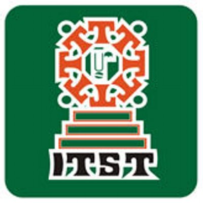

El Instituto Tecnológico Superior de Teziutlán es una institución de educación universitaria superior tecnológica ubicada en la ciudad de Teziutlán, municipio correspondiente al estado de Puebla. Como todas las instituciones de educación tecnológica en México, el Instituto Tecnológico Superior de Teziutlán se encuentra regulado por el organismo nacional conocido como Tecnológico Nacional de México.
